Chapter 8 Unification of the Fisherian and Neymanian Inferences in Randomized Experiments
Chapters 3–7 cover both the Fisherian and Neymanian inferences for different types of experiments. The Fisherian perspective focuses on the finite-sample exact  -values for testing the strong null hypothesis of no causal effects for any units whatsoever, whereas the Neymanian perspective focuses on unbiased estimation with a conservative large-sample confidence interval for the average causal effect. Both of them are justified by the physical randomization which is ensured by the design of the experiments. Because of this, they are both called randomization-based inference or design-based inference. Because they concern a finite population of units in the experiments, they are also called finite-population inference. They are related but also have distinct features.
-values for testing the strong null hypothesis of no causal effects for any units whatsoever, whereas the Neymanian perspective focuses on unbiased estimation with a conservative large-sample confidence interval for the average causal effect. Both of them are justified by the physical randomization which is ensured by the design of the experiments. Because of this, they are both called randomization-based inference or design-based inference. Because they concern a finite population of units in the experiments, they are also called finite-population inference. They are related but also have distinct features.
In 1935, Neyman presented his seminal paper on randomization-based inference to the Royal Statistical Society. His paper (Neyman,, 1935) was attacked by Fisher in the discussion session. Sabbaghi and Rubin, (2014) reviewed this famous Neyman–Fisher controversy and presented some new results for this old problem. Instead of going to the philosophical issues, this chapter tries to provide a unified discussion.
43 Testing strong and weak null hypotheses in the CRE
Let us revisit the treatment-control CRE. The Fisherian perspective focuses on testing the strong null hypothesis
 |
The FRT delivers a finite-sample exact  defined in (8).
defined in (8).
By duality of the confidence interval and hypothesis testing, the Neymanian perspective gives a test for the weak null hypothesis
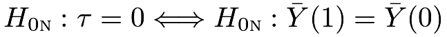 |
based on
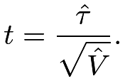 |
By the CLT of  and the conservativeness of the variance estimator, we have
and the conservativeness of the variance estimator, we have
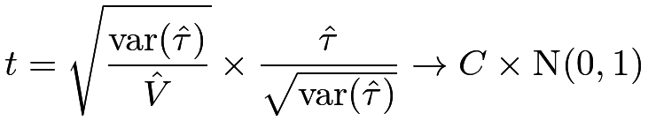 |
in distribution, where  is smaller than or equal to
is smaller than or equal to  but depends on the unknown potential outcomes. Using
but depends on the unknown potential outcomes. Using  quantiles for the studentized statistic
quantiles for the studentized statistic  , we have a conservative large-sample test for
, we have a conservative large-sample test for  .
.
Furthermore, Ding and Dasgupta, (2017) show that the FRT with the studentized statistic has the dual guarantees:
- 1.
is finite-sample exact under
 ;
; - 2.
is asymptotically conservative under .
Importantly, this is a feature of the studentized statistic . Ding and Dasgupta, (2017) showed that the FRT with other test statistics may not have the dual guarantees. In particular, the FRT with may be asymptotically anti-conservative under . I give some heuristics below to illustrate the importance of studentization in the FRT.
Under , we have
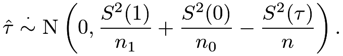 |
The FRT pretends that the Science Table is
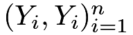
induced by, so the randomization distribution of is
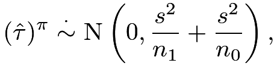 |
where
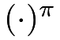
denotes the randomization distribution24 and is the sample variance of the observed outcomes. Based on (13) in Chapter 3, we can approximate the asymptotic variance of
is the sample variance of the observed outcomes. Based on (13) in Chapter 3, we can approximate the asymptotic variance of 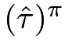
under as
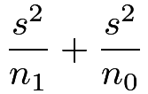 |
 |
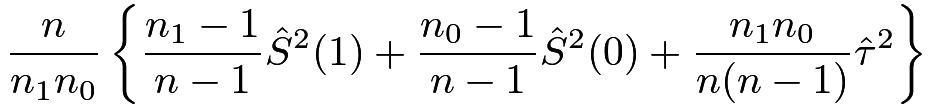 |
||
 |
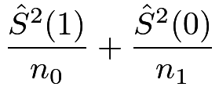 |
|||
|
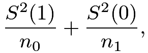 |
which does not match the asymptotic variance of . Ideally, we should compute the -value under based on the true distribution of , which, however, depends on the unknown potential outcomes. In contrast, we use the FRT to compute the based on the permutation distribution , which does not match the true distribution of under even with large samples. Therefore, the FRT with may not control the type one error rate under even with large samples.
Fortunately, the undesired property of the FRT with goes away if we replace the test statistic with the studentized version . Under , we have
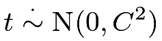 |
where
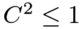
with equality holding if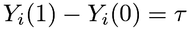
for all units . The FRT pretends that
. The FRT pretends that 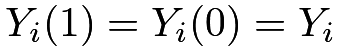
for all ’s and generates the permutation distribution
’s and generates the permutation distribution
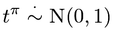 |
where the variance equals because the Science Table used by the FRT has zero individual causal effects. Under , because the true distribution of is more dispersed than the corresponding permutation distribution, the based on is asymptotically conservative.
44 Covariate-adjusted FRTs in the CRE
Extending the discussion in Section 43 to the case with covariates, Zhao and Ding, 2021a () recommend using the FRT with the studentized Lin, (2013)’s estimator:
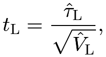 |
which is the robust -statistic for the coefficient of  in the OLS fit of
in the OLS fit of  on
on  . They show that the FRT with
. They show that the FRT with
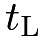
has multiple guarantees:- 1.
is finite-sample exact under ;
- 2.
is asymptotically conservative under ;
- 3.
is asymptotically more powerful than the FRT with when does not hold and the covariates are predictive to the outcomes;
- 4.
the above properties hold even when the linear outcome model is misspecified.
Similarly, this is a feature of the studentized statistic . Zhao and Ding, 2021a () show that other covariate-adjusted FRTs reviewed in Section 30.1 may be either anti-conservative under or less powerful than the FRT with when does not hold.
45 A simulation study
Now I use simulation to evaluate the finite-sample properties of the ’s under the weak null hypothesis. I will use the following twelve test statistics.
- 1.
The first three test statistics are from the OLS implementation of Neyman, (1923), including the coefficient of the treatment, the
-statistic based on the classic standard error, and the -statistic based on the EHW standard error. - 2.
The next three test statistics are based on the pseudo-outcome strategy in Definition 6.2, advocated by Rosenbaum, 2002a (). We first residualize the outcomes by regressing
on  , and then obtain the three test statistics similar to the first three.
, and then obtain the three test statistics similar to the first three. - 3.
The next three test statistics are based on the OLS implementation of Fisher, (1925), as discussed in Chapter 30.2.
- 4.
The final three test statistics are based on the OLS implementation of Lin, (2013), as discussed in Chapter 30.2.
Consider a finite population of  units subjected to a CRE of size
units subjected to a CRE of size
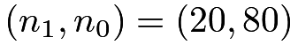
. For each, we draw a univariate covariate  from Unif
from Unif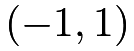
and generate potential outcomes as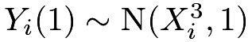
and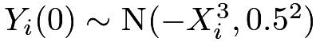
. Center the ’s and
’s and  ’s to ensure
’s to ensure 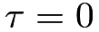
. Fix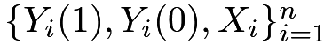
in simulation. We draw a random permutation of 1’s and
1’s and  0’s to obtain the observed outcomes and conduct FRTs.
The procedure is repeated 500 times, with the -values approximated by 500 independent permutations of the treatment vector in each replication.
0’s to obtain the observed outcomes and conduct FRTs.
The procedure is repeated 500 times, with the -values approximated by 500 independent permutations of the treatment vector in each replication.
Figure 16 shows the -values under the weak null hypothesis.
The four robust -statistics, as shown in the last row, are the only ones that preserve the correct type one error rates.
In fact, they are conservative, which is coherent with the theory.
All the other eight statistics yield type one error rates greater than the nominal levels and are thus not proper for testing the weak null hypothesis.
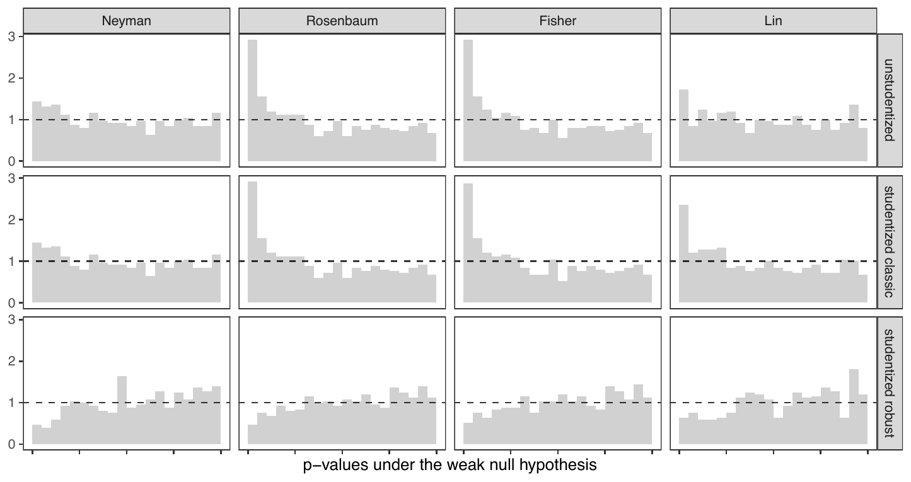
under the weak null hypothesis46 General recommendations
The recommendations for the SRE parallel those for the CRE if both the strong and weak null hypotheses are of interest. Recall the estimators in Chapters 5 and 30.4. Without additional covariates, Zhao and Ding, 2021a () recommend using the FRT with
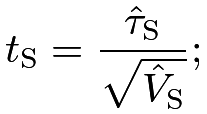 |
with additional covariates, they recommend using the FRT with
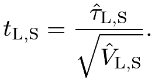 |
The analysis of ReM is trickier. Zhao and Ding, 2021a () show that the FRT with does not have the dual guarantees in Section 43, but the FRT with still has the guarantees in Section 44. This highlights the importance of both covariate adjustment and studentization in ReM.
Similar results hold for the MPE. Without covariates, we recommend using the FRT with the -statistic for the intercept in the OLS fit of  on ; with covariates, we recommend using the FRT with the -statistic for the intercept in the OLS fit of on and
on ; with covariates, we recommend using the FRT with the -statistic for the intercept in the OLS fit of on and
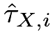
. Figure 15 in Chapter 7 are based on these recommended FRTs.Overall, the FRTs with studentized statistics are safer choices. When the large-sample Normal approximations to the studentized statistics are accurate, the ’s are almost identical to the -values based on Normal approximations. When the large-sample approximations are inaccurate, the FRTs at least guarantee valid -values under the strong null hypotheses. This is the recommendation of this book.
47 A case study
Recall the SRE in Chong et al., (2016) analyzed in Chapter 26.2.
I compare the “soccer” arm versus the “control” arm and the “physician” arm versus the “control” arm. We also compare the FRTs with and without using the covariate indicating the baseline anemia status. We use their dataset to illustrate the FRTs in the CRE and SRE. The ten subgroup analyses within the same class levels use the FRTs with and for the CRE and the two overall analyses averaging over all class levels use the FRTs with  and
and
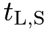
for the SRE.Table 4 shows the point estimators, standard errors, the -value based on the Normal approximation of the robust -statistics, and the -value based on the FRTs. In most strata, covariate adjustment decreases the standard error since the baseline anemia status is predictive of the outcome. Table 4 also exhibits two exceptions: within class 2, covariate adjustment increases the standard error when comparing “soccer” and “control”; in class 4, covariate adjustment increases the standard error when comparing “physician” and “control”. This is due to the small group sizes within these strata, causing the asymptotic approximation inaccurate. Nevertheless, in these two scenarios, the differences in the standard error are in the third digit. The -values from the Normal approximation and the FRT are close with the latter being slightly larger in most cases. Based on the theory, the -values based on the FRT should be trusted since it has an additional guarantee of being finite-sample exact under the sharp null hypothesis. This becomes important in this example since the group sizes are quite small within strata.
| est | s.e. | 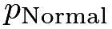 |
| |
| class 1 | ||||
| N | 0.051 | 0.502 | 0.919 | 0.924 |
| L | 0.050 | 0.489 | 0.919 | 0.929 |
| class 2 | ||||
| N | -0.158 | 0.451 | 0.726 | 0.722 |
| L | -0.176 | 0.452 | 0.698 | 0.700 |
| class 3 | ||||
| N | 0.005 | 0.403 | 0.990 | 0.989 |
| L | -0.096 | 0.385 | 0.803 | 0.806 |
| class 4 | ||||
| N | -0.492 | 0.447 | 0.271 | 0.288 |
| L | -0.511 | 0.447 | 0.253 | 0.283 |
| class 5 | ||||
| N | 0.390 | 0.369 | 0.291 | 0.314 |
| L | 0.443 | 0.318 | 0.164 | 0.186 |
| all | ||||
| N | -0.051 | 0.204 | 0.802 | 0.800 |
| L | -0.074 | 0.200 | 0.712 | 0.712 |
| est | s.e. | | ||
| class 1 | ||||
| N | 0.567 | 0.426 | 0.183 | 0.192 |
| L | 0.588 | 0.418 | 0.160 | 0.174 |
| class 2 | ||||
| N | 0.193 | 0.438 | 0.659 | 0.666 |
| L | 0.265 | 0.409 | 0.517 | 0.523 |
| class 3 | ||||
| N | 1.305 | 0.494 | 0.008 | 0.012 |
| L | 1.501 | 0.462 | 0.001 | 0.003 |
| class 4 | ||||
| N | -0.273 | 0.413 | 0.508 | 0.515 |
| L | -0.313 | 0.417 | 0.454 | 0.462 |
| class 5 | ||||
| N | -0.050 | 0.379 | 0.895 | 0.912 |
| L | -0.067 | 0.279 | 0.811 | 0.816 |
| all | ||||
| N | 0.406 | 0.202 | 0.045 | 0.047 |
| L | 0.463 | 0.190 | 0.015 | 0.017 |
Figure 17 compares the histograms of the randomization distributions of the robust -statistics with the asymptotic approximations. In the subgroup analysis, we can observe discrepancies between the randomization distributions and ; averaged over all class levels, the discrepancy becomes unnoticeable. Overall, in this application, the -values based on the Normal approximation do not differ substantially from those based on the FRTs. Two approaches yield coherent conclusions: the video with a physician telling the benefits of iron supplements improved academic performance and the effect was most significant among students in class 3; in contrast, the video with a famous soccer player telling the benefits of the iron supplements did not have any significant effect.
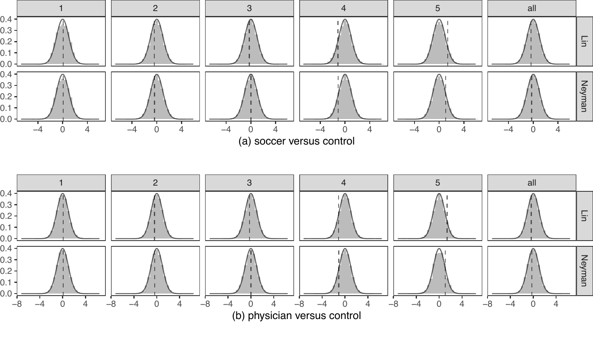
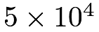
Monte Carlo draws and the approximations48 Homework Problems
8.1 Re-analyzing Angrist and Lavy, (2009)’s data
This is the Fisherian counterpart of Problem 7.8.
Report the ’s from the FRTs with studentized statistics.
8.2 Replication of Zhao and Ding, 2021a ()’s Figure 1
Zhao and Ding, 2021a () use simulation to evaluate the finite-sample properties of the ’s from the FRTs with various test statistics. Based on their Figure 1, they recommend using the FRT with to analyze the SRE. Replicate their Figure 1.
8.3 Recommended readings
Using the studentized statistics in permutation tests is not a new idea; see Janssen, (1997) and Chung and Romano, (2013). Under the design-based framework, Ding and Dasgupta, (2017) and Wu and Ding, (2021) made the recommendation for multiarmed experiments, and Zhao and Ding, 2021a () extended the recommendation to covariate adjustment.
脚注
24.  is a standard notation for a random permutation.
is a standard notation for a random permutation.